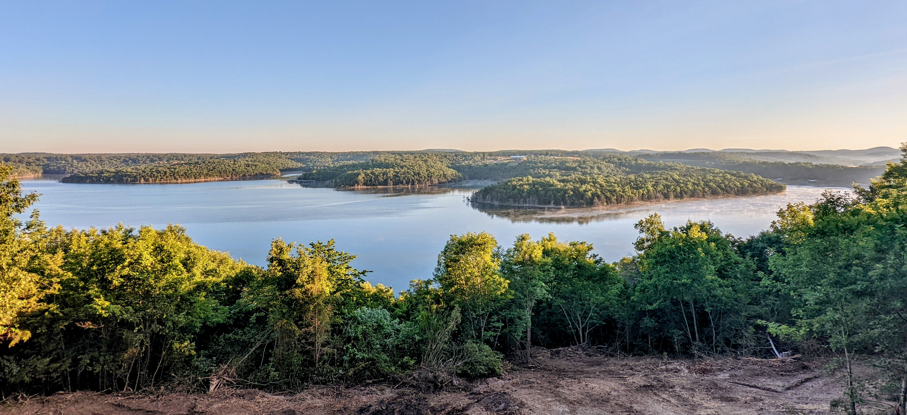

I'd like to welcome you to my little slice of paradise. The Ozarks are a hidden gem and home to some of the best fishing in the United States. With nearly 900 miles of shoreline, I'm happy to share our view and bit of shoreline with you.
 Explore the Ozarks